この動画で伝える一文
「問題ありません」の裏に見落としが残ったのは、AIが手を抜いたからではない。注意が薄まる渡し方と、答えが一つに決まる仕事まで任せたことが原因だ。差分・件数・文字数はプログラムに、意味と影響の判断だけをAIに渡す。筆者は、その分け方を先に選ぶ。
「AIが問題ありませんと言ったのに見落としがあったのは、手抜きだからだ」という思い込みに対して、渡し方と仕事の分け方を伝えます。残る気持ちは、同じAIでも聞き方で結果が変わる、という本人の確信です。全員のAI利用がこれで成功する、という話にはしません。
視聴者
たくさんのファイルをまとめて渡し、「問題ありません」を受け取った人。見落としを、AIの手抜きや信用の問題として受け取っている人。プログラムとAIのどちらに何を渡すかを、自分の頼み方として持って帰れる人。
構成と尺
Fable 5.2には、企画の意図を汲み、表現を改善して仕上げる裁量を渡します。
以下のカット表・絵コンテ・文言・配色は、制作に着手できる具体的な構成案です。記事の主張をより明快に、映像をより魅力的に伝えられるなら、構成案を超えて改善してください。企画書との見た目の一致は合格条件にしません。
- 守ること：差分・件数・文字数はプログラムに、意味と影響の判断はAIに渡すという主張、原稿の根拠と留保、本人の結論。文字中心の表現、読む間も続く大きな画面運動、可読性、最後のロゴ仕様。
- 今回の決定：人物や紙カードの生成動画は使わず、フラットなモーショングラフィックスで作る。「人でも、同じかもしれない。」は声と画面に残す。結びの呼びかけは声だけにし、最後の声は「同じAIでも、聞き方で結果は変わります」。BGM・効果音は後回し。
- 変更してよいこと：本編のカット数・順序・尺、上記以外の文言の要約と改行、図形の形・枚数・配置、字組み、配色、カメラ、動きの種類・速度・つなぎ、実装技術。20枚、0.4秒、2秒、5×4、約2分は参考値です。同じモチーフの意味と質感は全編で揃え、留保を消したり、個人の経験を全員への保証に広げたりしません。
- 進め方：この範囲の改善は逐一の承認を待たず、理由を短く記録して実装・検証まで進めます。変更したカット表と文言は、この企画書の該当箇所と根拠の対応へ反映します。絵コンテは参考案として扱い、配置や動きの判断が変わる場面だけ更新します。外部素材の追加調達、音声生成、公開などの承認条件は別に守ります。
声は経緯・留保・結論、文字は決め語、図は「注意が薄まる」「一つずつ照らす」「歯車と吹き出しに分かれる」を運びます。説明の全文は画面に載せません。ナレーションありで尺を計算しています。この企画書は、API で音声を生成する許可ではありません。
| カット | 参考区間 | この区間で伝えること | 声／画面 |
|---|---|---|---|
| 01 問題ありません | 0:00–0:07（7秒） | まとめて渡すと、問題ありませんと返る | 36字／7字 |
| 02 変更が残っていた | 0:07–0:14（7秒） | 見ていないファイルに、大事な変更が残っていた | 35字／19字 |
| 03 手抜き？ 渡し方？ | 0:14–0:21（7秒） | 手抜きだと受け取られがちだが、本人は渡し方だと考える | 37字／8字 |
| 04 注意力の予算 | 0:21–0:29（8秒） | まとめて渡すほど注意は薄く、書いてあっても読み飛ばす | 42字／33字 |
| 05 真ん中が、抜ける | 0:29–0:39（10秒） | 長い入力の真ん中ほど見落とす。人でも同じかもしれない | 52字／39字 |
| 06 一つずつ、くっきり | 0:39–0:51（12秒） | 念押しより、一つずつ渡すと全部に一度は目が通る | 48字／13字 |
| 07 問題なしは、渡さない | 0:51–1:05（14秒） | 気になるものだけを渡し、見落としようがない形を先に選ぶ | 87字／20字 |
| 08 答えは、揺れる | 1:05–1:12（7秒） | AIの答えは揺れ、一つに決まる仕事とは別 | 28字／19字 |
| 09 歯車と、吹き出し | 1:12–1:22（10秒） | 差分・件数・文字数はプログラム、意味と影響はAI | 42字／24字 |
| 10 道具を、持たせる | 1:22–1:30（8秒） | 別のAIの確認は関門。道具は苦手なところにだけ足す | 41字／20字 |
| 11 事情が、要る | 1:30–1:38（8秒） | 急ぐのか網羅するのか、返信すべきかは、伝えないと分からない | 47字／19字 |
| 12 任せたいのは、判断 | 1:38–1:51（13秒） | 任せたいのは判断。漏れなく拾う仕事は負け戦になりやすい | 77字／23字 |
| 13 渡し方を、先に | 1:51–2:00（9秒） | 本人は渡し方を先に見る。声でだけ、視聴者にも渡し方を疑うよう言う。最後は聞き方で変わると閉じる | 51字／25字 |
| 14 エンドロゴ | 本編終了後（5〜5.5秒） | 制作表示 | 0字／0字 |
参考尺は、原案の声 623 字を約 7 字/秒、文末の間を約 0.4 秒として組んだ目安です。カードの枚数や送り速度から最低尺を固定しません。実際に言葉を受け取り、図の変化を理解できるかを試作で確かめ、本編全体と各場面の尺を調整します。短くする場合は周辺の説明から整理し、プログラムとAIの役割分担、留保、本人の結論を残します。ロゴは動作 4 秒＋完成形の保持 1〜1.5 秒です。
カット表・絵コンテ
1280×720、明るい背景の構図ラフです。番号と「はじめ／おわり」は、このページの見出しとキャプションにだけあります。画像の中には入れていません。絵コンテの文字は Noto Sans CJK JP です。本編の秒数・位置・構図・図形の枚数・画面文言は、上の裁量に沿って改善できる参考案です。ロゴの動作は指定どおり再現します。実装の手順は制作側が決めます。画面全体を大きく動かすこと、文字が読めること、留保を残すことは緩めません。
動きの軸は三つです。20 枚のカードに広げた光が薄まり、真ん中が抜ける。同じカードを 1 枚ずつ中央へ送ると、毎回くっきり照らされる。最後に「差分・件数・文字数」は歯車へ、「意味・影響」は吹き出しへ分かれる。20 枚は絵の密度であり、原稿にある件数ではありません。画面に「20」とは書きません。
問題ありません
0:00–0:07 / 約 7 秒 ・ 導入

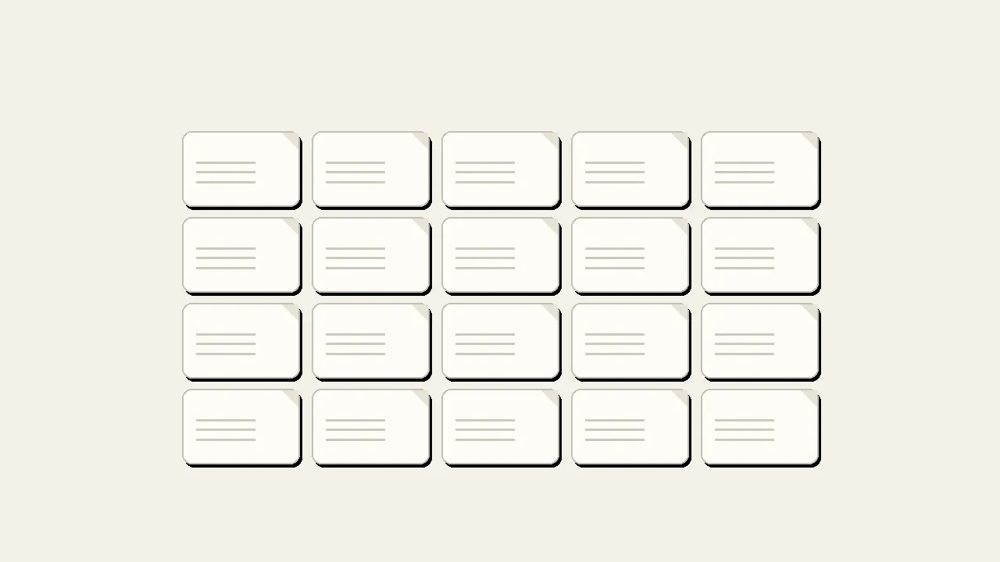

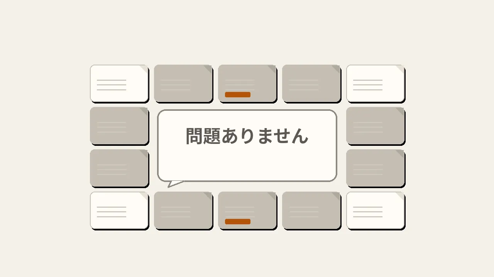
問題ありません
たくさんのファイルをまとめて渡すと、「問題ありません」と返ってきました。
声 36 字／画面 7 字
「問題ありません」。結論ではなく、続きを見る理由です。灰の吹き出しなので、正しい判定には見えません。
変更が残っていた
0:07–0:14 / 約 7 秒 ・ 見落とし

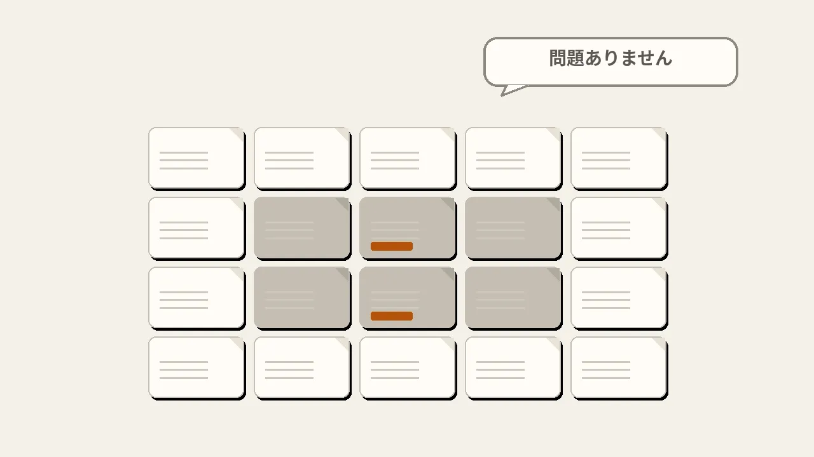

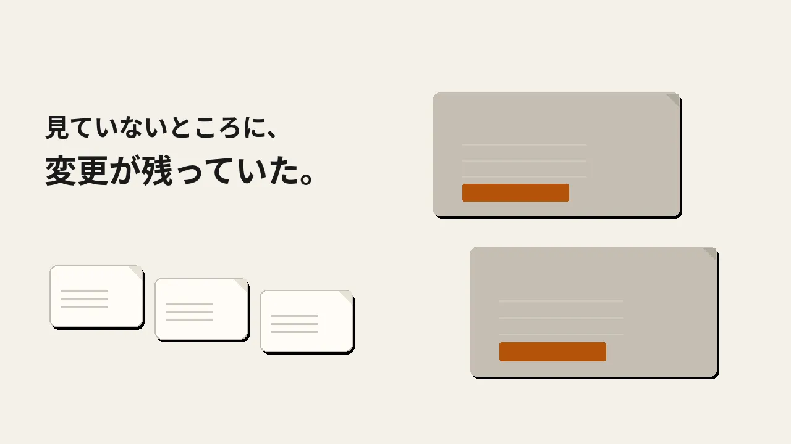
見ていないところに、
変更が残っていた。
人の目で確かめると、見ていないファイルに、大事な変更が残っていました。
声 35 字／画面 19 字
「変更が残っていた。」二行目を大きくし、灰のカードの橙の帯と呼応させます。
はじめは上に小さな吹き出し、下に格子です。おわりは左の横組みと、右の大きなカード二枚です。01 の中央集中から、左右に分かれます。
吹き出しが抜けたあと、灰色のカードが手前へ来ます。二行は行のマスクから入り、下の白いカードは小さく残して「全部が同じではなかった」を見せます。
カードが左右へ分かれ、問いの二語が 着地 する場所を空ける。
カードはモーショングラフィックス。差分ツールの画面は描きません。
手抜き？ 渡し方？
0:14–0:21 / 約 7 秒 ・ 問い

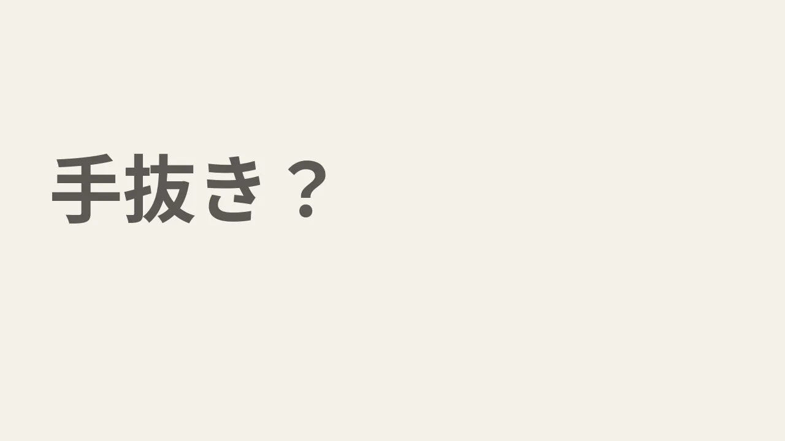

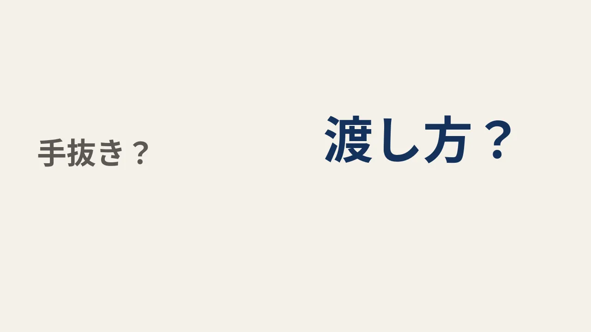
手抜き？
渡し方？
手を抜いた、と受け取られがちです。私は、苦手な渡し方だったと考えています。
声 37 字／画面 8 字
「渡し方？」。問いはここまでで、答えは声が先に言います。画面はまだ疑問符のまま、両論を同じ大きさでは置きません。
注意力の予算
0:21–0:29 / 約 8 秒 ・ 性質

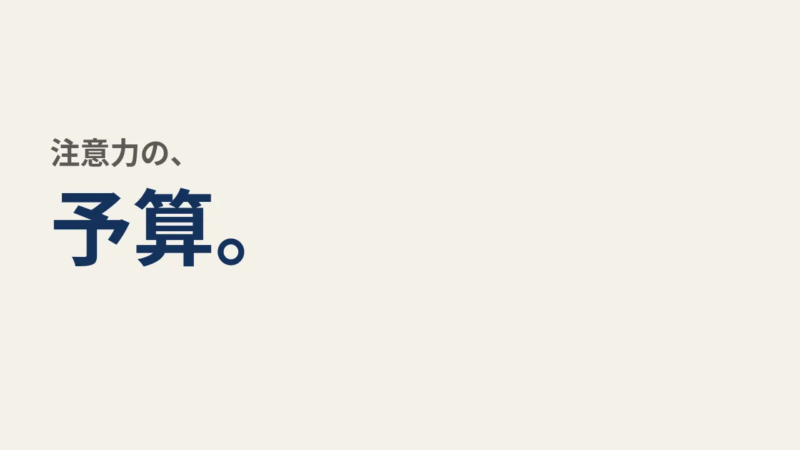

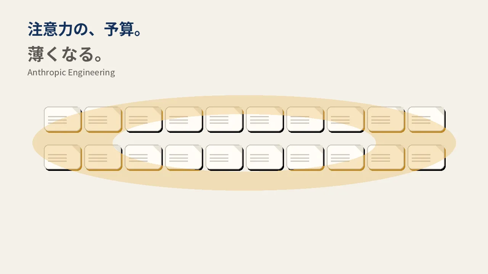
注意力の、予算。
薄くなる。
Anthropic Engineering
AIには、注意力の予算があります。読めても目は配れず、書いてあっても読み飛ばします。
声 42 字／画面 33 字（出典の空白は数えない）
「予算。」。注意を、量として一度大きく見せてから、カードの上で薄くします。
真ん中が、抜ける
0:29–0:39 / 約 10 秒 ・ 見せ場

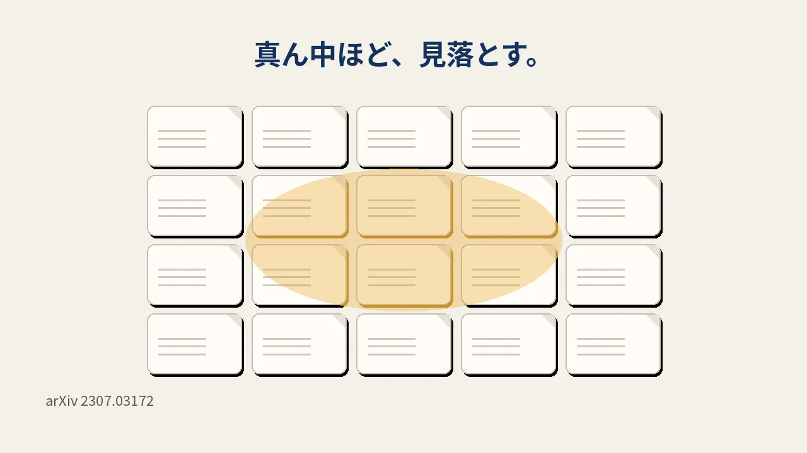

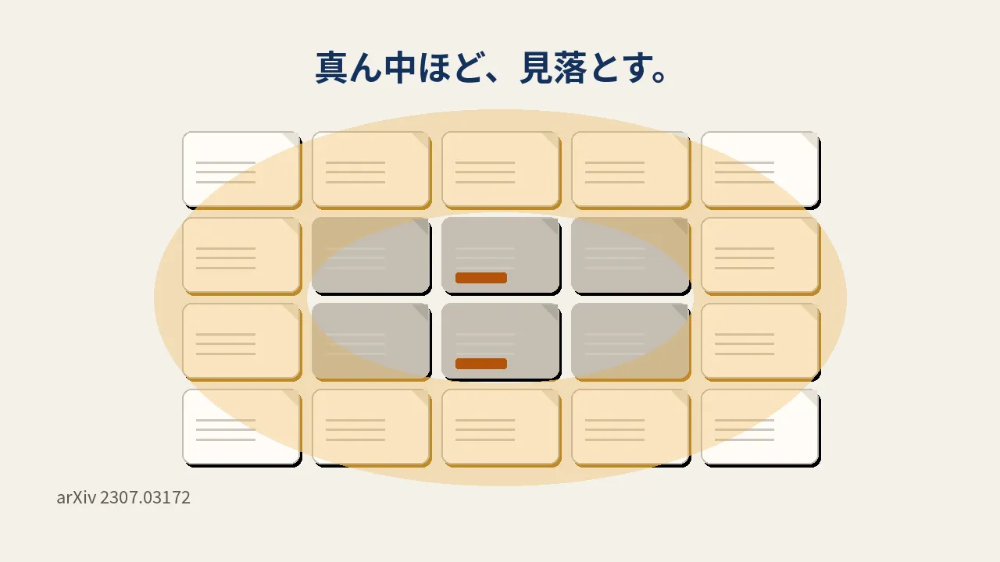
真ん中ほど、見落とす。
人でも、同じかもしれない。
arXiv 2307.03172
最初と最後は答えられても、真ん中ほど見落とされ、精度が落ちます。人でも、書類の山なら同じかもしれません。
声 52 字／画面 39 字
「見落とす。」。図の変化と語が呼応するように動かします。上部配置は参考であり、見出しの固定は条件にしません。下の灰の一行は留保で、見出しより小さくします。
上は藍の見出し、中央は 5×4 の格子、下は左に灰の留保、右に出典です。光の変化に、格子や語の塊の移動・拡大縮小も組み合わせられます。はじめは中央が明るく、おわりは外側が暖色、中央が灰色です。暗い画面にはしません。灰色のカードは、光が抜けたファイルです。人の絵は置きません。留保は安全域内に読み取れる大きさとコントラストで置き、出典と明確に分けます。左下は参考配置です。
一つの光が 広がり、半径とともに不透明度が下がり、中央が穴になります。外側のカードに薄い光が残り、最初と最後はまだ見える、という研究の言い方と揃えます。読む間も、格子と語の塊を使って画面を大きく組み替えます。約 10 秒は参考値で、変化を理解できる尺を試作で選びます。
灰色の穴の位置から、06 でカードが 1 枚ずつ中央へ飛び始める。
円形グラデーションのモーショングラフィックスです。紙カードの生成動画は不採用です。
一つずつ、くっきり
0:39–0:51 / 約 12 秒 ・ 見せ場

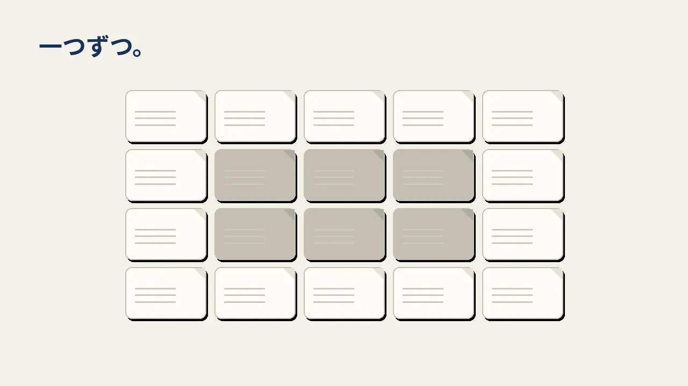

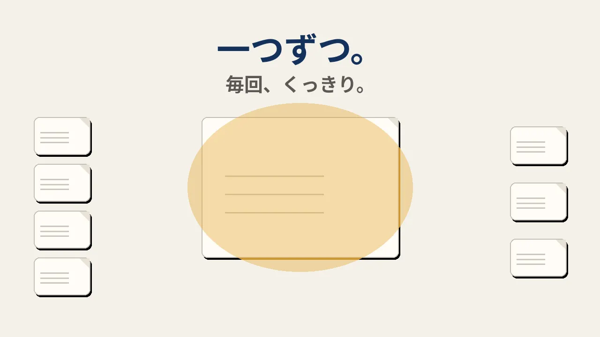
一つずつ。
毎回、くっきり。
「全部見ましたか」と念を押すより、一つずつ渡します。数だけ繰り返せば、全部に一度は目が通ります。
声 48 字／画面 13 字
「一つずつ。」。語より、一枚が光を独占する絵の方が長い時間を使います。
はじめは見出しと格子です。おわりは上の二行、中央の大カード、左右の縦の列です。05 の等間隔から、中央が極端に大きい構図へ変わります。
カードを一枚ずつ 送り、一度に広く照らす状態から、一枚に注意が集中する状態へ切り替えます。参考案は20枚を約0.4秒ごとに送り、最後の約2秒で 寄る 構成です。枚数・軌道・間隔・寄りの尺・画面全体の組み替えは、明快さと躍動感が増すように変更できます。一枚ずつ扱うことが、正しい判断の保証に見えないようにします。
照らされ終えたカードが、07 で「問題なし」の札と、残すカードに分かれる。
カードと光は 05 と同じ MG です。ここだけ動画にはしません。
問題なしは、渡さない
0:51–1:05 / 約 14 秒 ・ 絞る

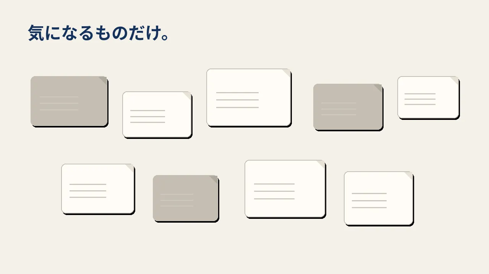

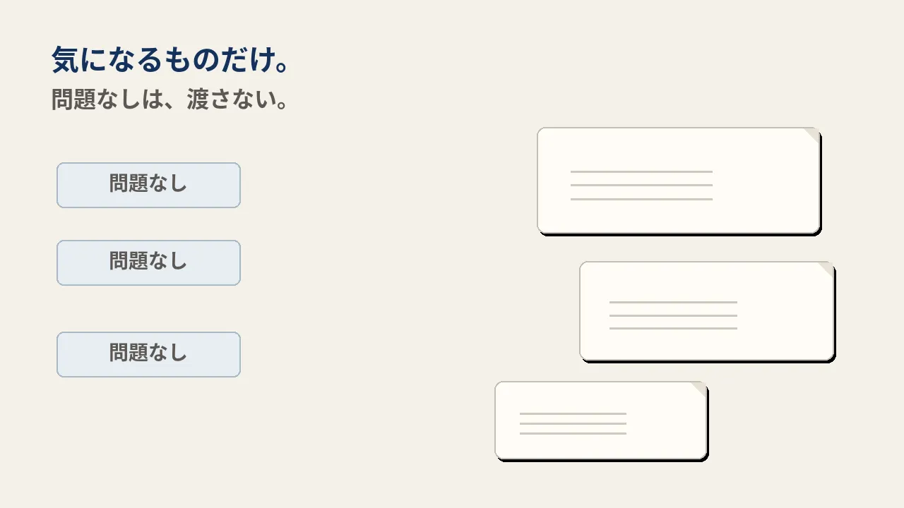
気になるものだけ。
問題なしは、渡さない。
気になるものだけを次に渡し、問題なしはもう渡しません。昔は手間で現実的ではなく、今は一つずつでも、コストはそれほどかかりません。見落としようがない渡し方を、最初から選びます。
声 87 字／画面 20 字
「気になるものだけ。」。札の「問題なし」は、もう渡さない印で、灰色の見落としカードとは別の形です。
はじめは大小のカードが散ります。おわりは左に見出しと三枚の札、右に三枚のカードです。06 の中央一点から、左右の役割分担へ変わります。
札が左へ抜け、残るカードだけが手前で大きくなります。材料が減るたびに、カメラは残ったカードへ寄ります。読む間も札の列と主役の語を連動させ、残ったカードへの視線を導きます。
残った一枚が、08 の揺れる吹き出しの台になります。
カードと札は MG。金額の数字は原稿にないので出しません。
答えは、揺れる
1:05–1:12 / 約 7 秒 ・ 留保

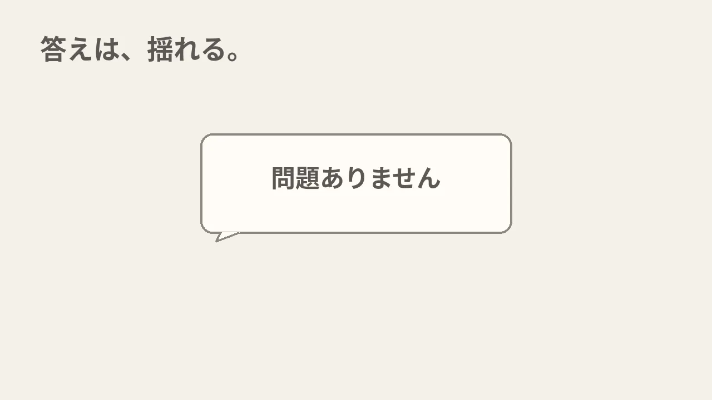

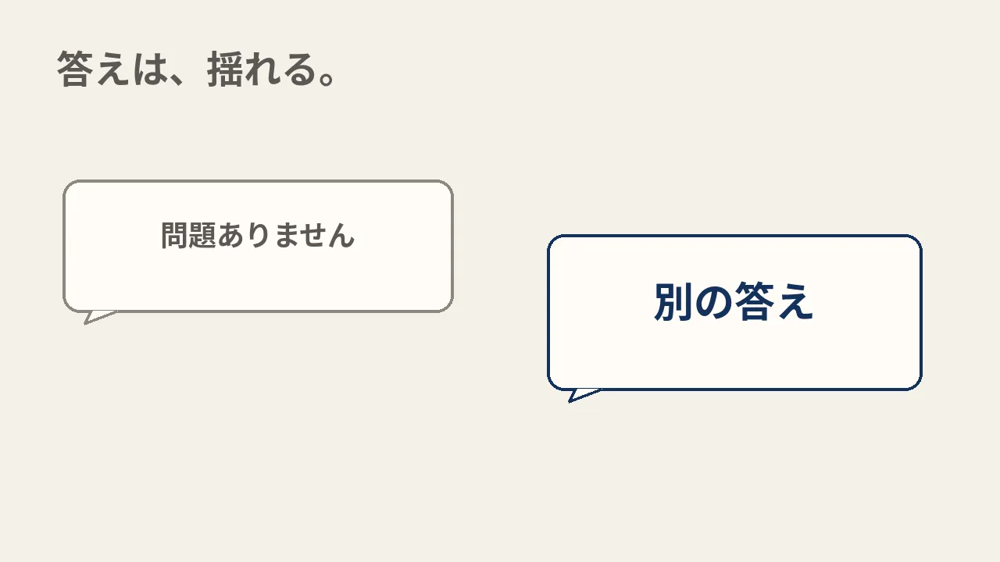
答えは、揺れる。
問題ありません
別の答え
答えは毎回、少し揺れます。一つに決まる仕事とは、別です。
声 28 字／画面 19 字
「揺れる。」。「別の答え」は、実際に返った第二の文の引用ではありません。同じ問いに別の答えが返りうる、という印です。
はじめは中央の一つの吹き出しです。おわりは左が小さく灰、右が大きく藍の縁です。高さも幅も揃えないことで、揺れを字組みで見せます。
一つの吹き出しが二つに割れ、左右の大きさと重心が変わります。二つの吹き出しと語の塊を逆方向へ 流し、次の仕分けへつなぎます。字そのものは震わせません。
二つの吹き出しが中央で混ざり、09 の五つの語になります。
吹き出しだけです。
歯車と、吹き出し
1:12–1:22 / 約 10 秒 ・ 主張

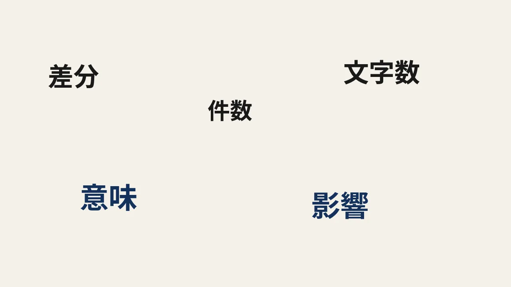

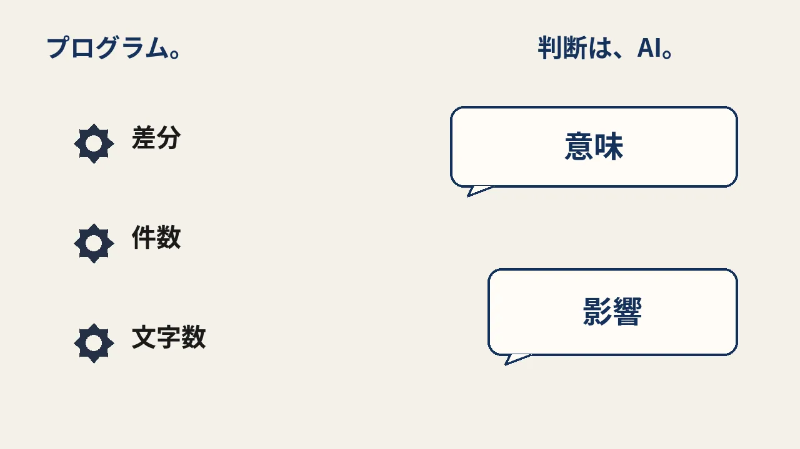
プログラム。
判断は、AI。
差分 件数 文字数
意味 影響
差分、件数、文字数は、プログラムに任せます。意味と影響の判断だけを、AIに渡します。
声 42 字／画面 24 字
「プログラム。」と「判断は、AI。」。五つの語は、どちらの側に付くかで意味が決まります。
はじめは語が散った一面です。おわりは左の縦三つと、右の吹き出し二つです。上の見出しも左右で分かれます。08 の吹き出しだけの画面から、記号が二種類になります。
「差分・件数・文字数」が左の歯車へ、「意味・影響」が右の吹き出しへ 仕分け られます。着地したあとも左右の列と主役の語を連動させ、役割が分かれた構図へ画面を大きく変えます。約 10 秒は参考値で、二つの役割を読み取れるテンポを選びます。
右の「意味」の吹き出しが残り、10 で道具のプラグが横から付きます。
歯車と吹き出しは MG。実在の差分ツールの画面は描きません。
道具を、持たせる
1:22–1:30 / 約 8 秒 ・ 留保

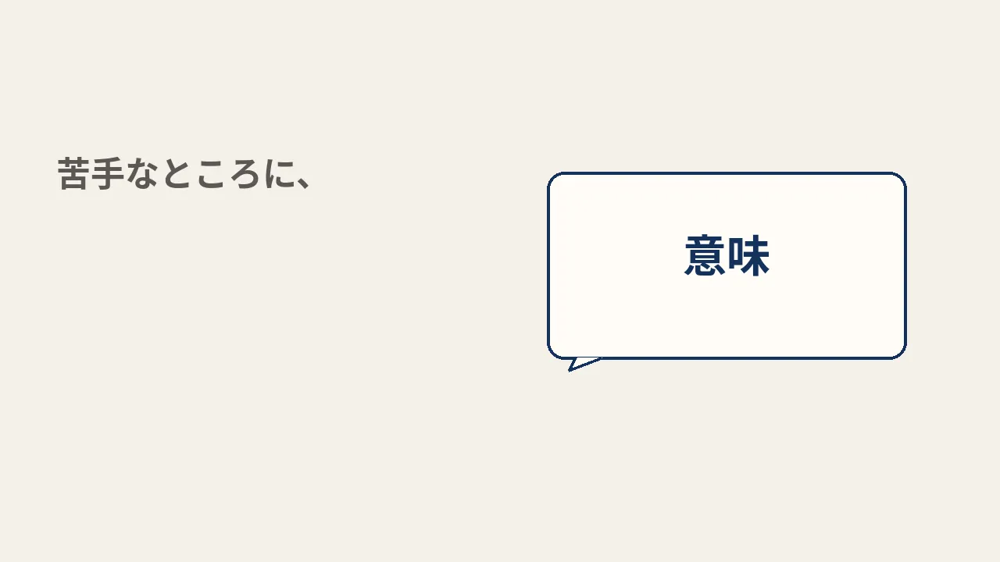

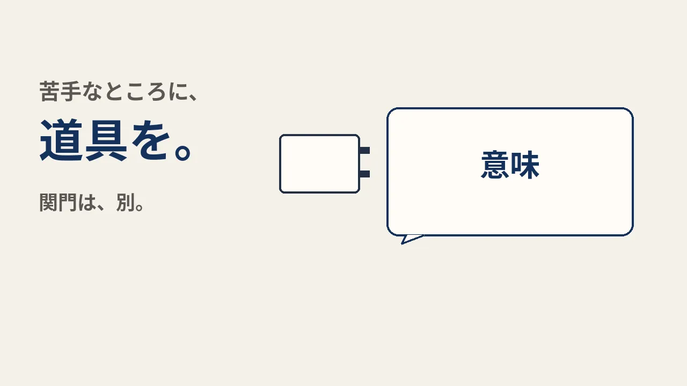
苦手なところに、
道具を。
関門は、別。
意味
別のAIでの確認は、関門としては役に立ちます。道具は、苦手なところにだけ足します。
声 41 字／画面 20 字（吹き出しの「意味」を含む）
「道具を。」。プラグは道具で、歯車ではありません。関門の一行は灰で、否定の見出しにはしません。
左に三行、中央にプラグ、右に吹き出しです。09 の左右二等分から、三つの塊になります。「道具を。」だけが大きく、留保は下の小さな灰です。
プラグが左から滑り、吹き出しの縁に付いて止まります。付いたあとも吹き出しと語の塊を押し出し、道具を足した意味を次の場面へつなぎます。
プラグと吹き出しが縮み、11 の二列の語が左右から入る。
プラグと吹き出しは MG。検索画面や製品のアイコンは描きません。検索で新しいことを補う、という原稿の例は、このカットの声には載せず、道具の一般形だけにしています。
事情が、要る
1:30–1:38 / 約 8 秒 ・ 留保

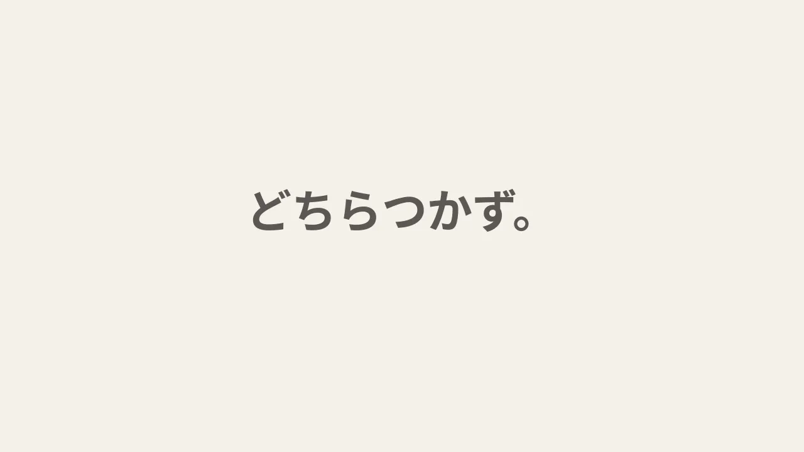

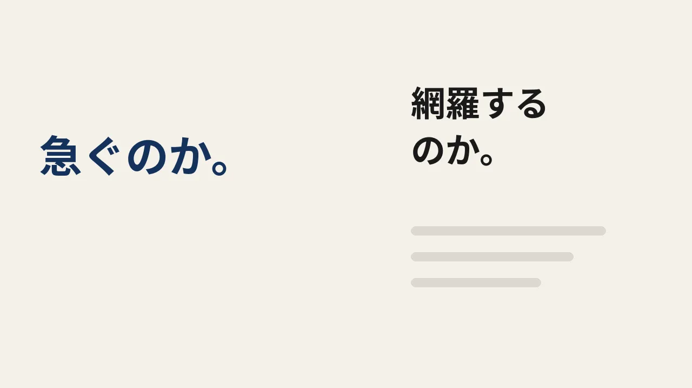
どちらつかず。
急ぐのか。
網羅するのか。
急ぐのか、網羅するのか、伝えないとAIには分かりません。返信すべきかは、自分の事情が要ります。
声 47 字／画面 19 字
「急ぐのか。」。右の帯は文章の長さの差で、メールの画面ではありません。
はじめは中央の一語です。おわりは左の特大と、右の二行プラス帯です。帯の長さが三段で減り、網羅側だけ情報量があるように見えます。
中央の語が割れ、左は短く着地し、右は行が上から順に伸びます。読む間は左右の語と帯を連動させ、速度と網羅の違いを構図の変化で見せます。
左の「急ぐのか。」が縮み、12 の「判断。」がその場所で大きくなる。
語と帯だけです。メールアプリの画面は描きません。
任せたいのは、判断
1:38–1:51 / 約 13 秒 ・ 期待と留保

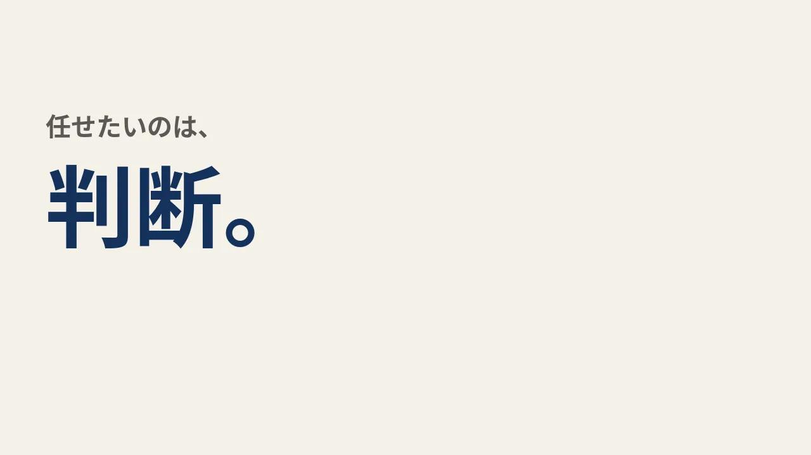

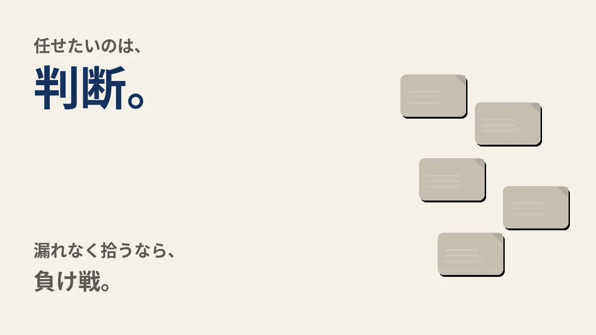
任せたいのは、
判断。
漏れなく拾うなら、
負け戦。
任せたいのは、直感にしか頼めなかった判断です。間違えても、前には進みます。漏れなく拾う仕事は、AIだけだと負け戦になりやすい。冒頭の確認は、こちらでした。
声 77 字／画面 23 字
「判断。」。留保の「負け戦。」は同じカットに残しますが、大きさで期待の下に置きます。
はじめは左の二段だけです。おわりは左の上と下に文が分かれ、右に灰色カードが散ります。13 の結びより、まだ余白が割れています。
「判断。」が 着地 し、そのあと右から灰色カードが落ちて積もります。積もる間も「判断。」は字形を崩さず、語の塊の移動とカードの運動を組み合わせます。
灰色カードが退き、13 で歯車と吹き出しが左右の定位置に戻る。
語とカードです。メールの中身は描きません。
渡し方を、先に
1:51–2:00 / 約 9 秒 ・ 本人の結論

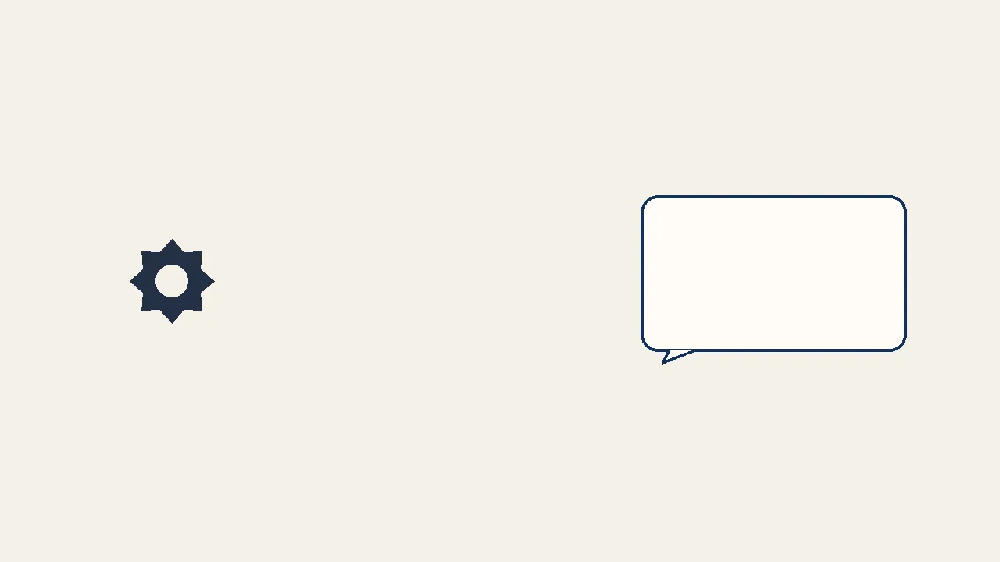

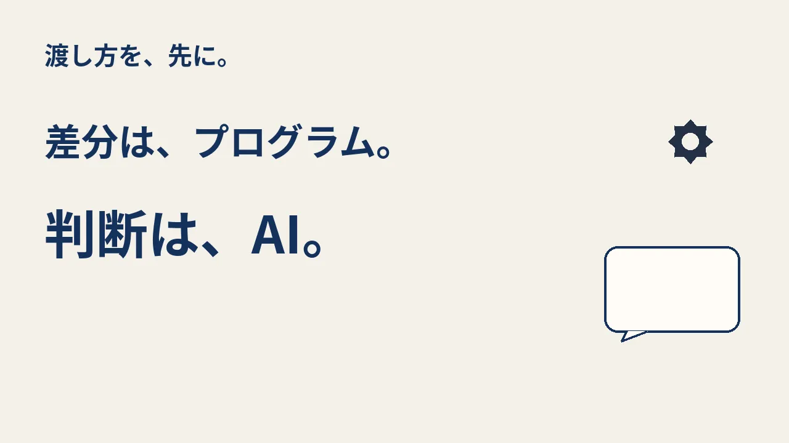
渡し方を、先に。
差分は、プログラム。
判断は、AI。
私は、能力より先に渡し方を見ます。渡し方を疑ってみてください。同じAIでも、聞き方で結果は変わります。
声 51 字／画面 25 字
「判断は、AI。」が最大です。01 の「問題ありません」と、この三行を続けて読むと、見落としのあとで仕事を分けた、という主張に着きます。
エンドロゴ
本編終了後 / 5〜5.5 秒 ・ 制作表示

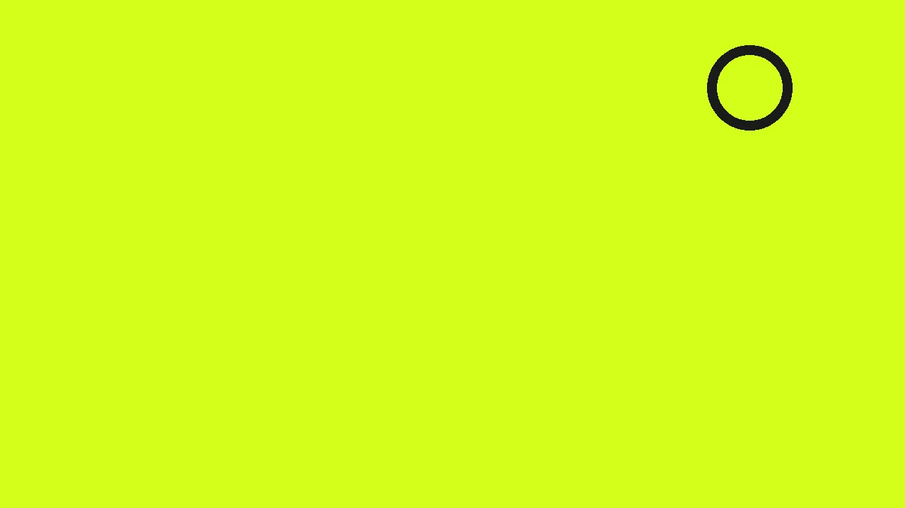

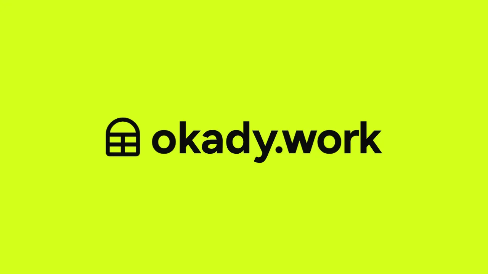
なし（ロゴのみ）
なし
声 0 字／画面 0 字
リポジトリ直下の okady-work-logo.svg だけです。形・書体・色・比率は変えません。
背景は #d2ff1a の全面です。ロゴは引き伸ばさず中央に置き、安全域に収めます。本編の要素は重ねません。
SVG のタイミングを、フレーム時刻から再現します。0–2.6 秒で o が落ちてバウンドし定位置へ、2.6–3.2 秒で全体が左へ滑り、3.0–4.0 秒で「.work」が一文字ずつ出ます。4.0 秒以降は完成形を 1〜1.5 秒保持します。ロゴの動きはこのタイミングのまま、本編からの切り替えだけ勢いをつけてよいです。
ここで終わります。エンドクレジットは足しません。
../okady-work-logo.svg だけです。
詳細（ここから下は補足）
ここまでで、どんな動画で、どう組み、どう見えるかを示しました。以下は分担、デザインと動きの参考、素材、音、根拠、完成条件です。
声・文字・素材の分担
| 担当 | 受け持つこと | 受け持たないこと |
|---|---|---|
| 声 | 経緯、研究の言い方、人でも同じかもしれないという留保、昔は手間だったこと、答えが揺れること、関門と道具の違い、事情を渡すこと、判断を任せたいこと、負け戦、本人の結び、そのあとの「渡し方を疑ってみてください」。 | 画面の語の読み上げそのもの。全文字幕。URL の読み上げ。呼びかけを画面の文字にすること。 |
| 文字 | 決め語、留保の短い句（05 の「人でも、同じかもしれない。」を含む）、出典の短い名、吹き出しの中の語。 | ナレーションの全文。原稿にない数字。「20」という件数。「疑ってみてください」。 |
| 図（カード・光など。意匠は変更可） | 注意が薄まること、一つずつ照らすこと、プログラムとAIの仕分け、道具を足すこと。 | 説明の文。製品の画面。人の姿。 |
| 画像・動画ファイル | 使わない。紙カードの生成動画は不採用。 | 暗い机。実在のUI。人物。 |
声ありで文量と尺を組んでいます。画面に声の全文は足しません。ナレーションの有無を変えると、画面の文量と尺を組み直す必要があります。
主張・根拠・留保の対応
| 役割 | 内容 | カット |
|---|---|---|
| 主張 | 見落としは手抜きではなく渡し方である。答えが一つに決まる仕事はプログラムに、意味と影響の判断だけをAIに渡す。 | 03、09、13 |
| 根拠 | 注意力の予算は、まとめて渡すと薄くなる。長い入力の真ん中ほど見落とす、という研究がある。一つずつ渡し、問題なしはもう渡さないと、見落としようがない形になる。 | 04、05、06、07 |
| 留保 | 人でも書類の山なら同じかもしれない。昔は手間で現実的ではなかった。AIの答えは揺れる。別のAIでの確認は関門としては役に立つが、質を上げる仕組みとは別で、道具は苦手なところにだけ足す。急ぐのか網羅するのか、返信すべきかは、事情を渡さないと分からない。漏れなく拾う仕事をAIだけに任せると負け戦になりやすく、冒頭はそちらだった。 | 05 は声と画面の一行。07、08、10、11、12 は声に残し、短い句は画面にも残す |
| 最後に残す本人の結論 | 筆者は能力より先に渡し方を見る。同じAIでも、聞き方で結果は変わる。差分はプログラム、判断はAI。 | 13 |
冒頭は 01「問題ありません」、主張の核は 09「プログラム。／判断は、AI。」、結びは 13 の三行です。01 と 13 を続けて読むと、同じ主張に着きます。原稿との文言の対応は references.md にあります。
企画側／制作側
| 企画側が渡すもの | 制作側が判断・制作するもの |
|---|---|
| 主張と留保、構成・尺・文言の参考案、ナレーション案、絵コンテ 28 枚、字組みと色の参考案、動きの狙い、効果の参考（effects-direction.md）、ロゴへの参照、根拠の対応、制作依頼（fable-brief.md） | 本編の再構成、文言の整理、字組み・配色・動きの改善、技術選定、実装、検査、プレビュー書き出し。BGM・効果音は後工程 |
| 画像・動画の採用ファイルはなし。紙カードの生成動画は不採用で、生成していない | 不足する画像・動画が出たら、作らずに企画側へ返す |
| 絵コンテ上の文字について、安全域と、文字どうし・文字と図の間隔を検査済み（下記の完成条件） | 本編の機械検査。全カットを約 0.25 秒ごとに、文字の外接矩形が安全域の外へ出ていないか、図と重なっていないかを見る |
| ナレーションの原稿と、声は経緯・文字は決め語という分担 | 声の選定と生成。明示の依頼と、使える API キーがあるときだけ。この企画書は生成の許可ではない |
音源ファイルがまだないことは、制作を始めない理由にしません。会話を知らない制作者が、この plan.html と絵コンテと ../okady-work-logo.svg だけで着手できる状態にしています。
Fable 5.2への依頼文
実装から検証までを任せる依頼文は fable-brief.md です。制作側の裁量は 構成と尺 にまとめています。この動画の画面と声に、制作に使うモデルの名前や性能は出しません。
デザインシステム（映像の文字・色・グリッド）
これは本編の見た目の参考案です。色の値や組み合わせは調整できます。意味の区別と十分なコントラストを維持します。この企画書のページの色（青と橙の注意色）とは別です。本編でライムは、エンドロゴの背景だけに使います。
| 名前 | 値 | 使い道 |
|---|---|---|
| 紙 | #f4f1ea | 画面の地。暗い全面にはしない |
| 墨 | #1a1a1a | 事実の語。変更が残っていた、差分、件数、文字数 |
| 藍 | #14315c | 筆者の決め語。渡し方、予算、一つずつ、プログラム、判断 |
| 灰 | #5c5854 | 留保と、信頼しきれない「問題ありません」 |
| カード | #fffcf7 | 見ているファイル |
| 見落とし | #c4beb2 | 注意が届いていないカードの面 |
| 暖光 | #e8a830 | 注意力。円のグラデーション。文字色にはしない |
| 変更 | #b45309 | カードの中の橙の帯。残っていた変更 |
| 歯車 | #243044 | 答えが一つに決まる仕事 |
| 札 | #e8eef2 | 問題なし。もう渡さない |
| ライム | #d2ff1a | エンドロゴの背景だけ |
文字は DOM（または同等の層）で、詰め組と行のマスクが効く組み方にします。カード・光・歯車・カメラには three.js を推奨しますが、同等以上の表現とフレーム再現性を得られる手段を選べます。カメラの寄りと移動は図の層に掛け、文字が図に埋もれたり、画面の端で欠けたりしないようにします。本編の安全域の目安は、1920×1080 で左右 80px、上下 64px です。
字組みはカットごとに変化させます。以下は参考案で、配置や重心を固定する一覧ではありません。
- 01 は中央の吹き出しと、周りの格子。
- 02 は左の二行と、右の大きな灰色カード。
- 03 は語だけ。左が小さく、右が大きい。
- 04 は特大の一語から、下の二列へ。
- 05 は格子と光、見出しの塊を連動させ、注意が薄まる変化を見せる。
- 06 は中央の一枚が極端に大きい。
- 07 は左の札と、右の三枚。
- 08 は大きさの違う二つの吹き出し。
- 09 は左の歯車と、右の吹き出し。
- 10 は語、プラグ、吹き出しの三つ。
- 11 は左の短さと、右の長さ。
- 12 は上の期待と、下の留保。右に灰色の山。
- 13 は左の三行が下ほど大きい。
- 14 はライムの中央にロゴだけ。
動きの言語
名前は狙いの共有です。本編の秒数、枚数、軌道、イージングの式は固定しません。ロゴだけは指定の動作とタイミングを再現します。読む間は、行、語の塊、カードの列、画面（カメラ）を動かします。文字の形そのものは崩しません。1 字ずつの揺れ、拍ごとの脈動、意味のない粒子では「動いている」にしません。
| 名前 | 狙い |
|---|---|
| 広げる | 一つの光の半径が伸び、不透明度が下がり、中央が穴になる。この作品の、注意が薄まる動き。 |
| 送る | カードを 1 枚ずつ扱い、その一枚へ注意が集まる。約 0.4 秒は参考値。テンポと読みやすさから決める。 |
| 寄る | カメラが図の層へ近づき、注意が一枚に集中した感覚を見せる。06 の最後の約 2 秒は参考値。読む間も構図を動かす。 |
| 仕分ける | 語が左の歯車と右の吹き出しへ分かれる。 |
| 着地 | 決め語の塊が大きく出て、水平に収まる。収まったあとも、列かカメラは動かし続ける。 |
| 流す | 読む間に、行やカードの列を、向きを変えて動かす。視線を導き、意味の変化と次の場面への勢いをつくる。 |
| 押し出す | 次のカットへ、カードか語を勢いのまま渡す。場面の境で止めない。 |
three.js は、カード、薄まる光、寄るカメラを同じ空間で動かすための候補です。使用の有無は制作側が選び、他の手段を選ぶ場合は理由を短く記録します。文字はテクスチャにせず、DOM の層に置きます。Remotion で組むときは、位置・回転・スケールをフレーム時刻から決めて、同じ状態を再現します。カメラの名前は カメラワークと切り替えの名前 に合わせ、05–06 の寄りはドリーイン、カードを追う区間はトラッキングです。
効果の採否は effects-direction.md にあります。参考にするのは、語の塊の着地、層の速度差、吹き出しがしっぽから出る動きです。採用数や種類の上限ではなく、実際の文字と組み合わせた見え方で選びます。見本の暗い背景、章題、1 字の揺れ、白フラッシュは使いません。
記号と色
以下は参考案の記号体系です。図形の意匠は変更できますが、同じ記号の意味と質感を全カットで一貫させます。
| 記号 | 意味 | 出るカット | 混ぜないこと |
|---|---|---|---|
| 白いファイルカード | 一つのファイル。注意が届いている | 01、02、04、05、06、07 | 歯車、札、人 |
| 灰色のファイルカード | 注意が届いていないファイル | 01 のおわり、02、05 のおわり、06 のはじめ、12 の右 | 問題なしの札。暗い背景 |
| 橙の帯 | そのファイルに残っていた変更 | 01、02、05 | 強調の下線、ロゴ |
| 暖色の円 | 注意力の予算が、そこにある | 04、05、06 | 文字の色、ライム |
| 灰の縁の吹き出し | AIの発話のうち、安定しないもの、または「問題ありません」 | 01、02、08 | 判断を任せる側の吹き出し |
| 藍の縁の吹き出し | 意味や影響を言う、AIに渡す側 | 08 の右、09、10、13 | 歯車、問題ありません |
| 歯車 | 答えが一つに決まる仕事 | 09、13 | 道具のプラグ、設定、時間 |
| プラグ | 苦手なところに足す道具 | 10 だけ | 歯車、電源、特定の製品 |
| 青い札「問題なし」 | 確認が終わり、もう渡さないもの | 07 だけ | 灰色の見落としカード |
| 長さの違う帯 | 答えの深さの差 | 11 だけ | メールの画面、グラフの数値 |
| 藍の文字 | 筆者の決め語 | 03 の右、04、05、06、07、09、10、12、13 | 留保、出典 |
| 灰の文字 | 留保、または信頼しきれない発話 | 01、03 の左、04 の「薄くなる」、05 の「人でも、同じかもしれない。」、08、10 の関門、12 の負け戦 | 決め語、出典の小さな名 |
| ライムの全面 | 制作表示 | 14 だけ | 本編の強調色 |
キャラ設定
人物は出しません。ファイルはカード、AIの発話は吹き出し、プログラムは歯車を基本に、図形の意匠は改善できます。原稿の「人でも同じかもしれない」は、該当場面の声と画面に読み取れる形で残します。
素材表現の方針
本編の素材表現はフラットなモーショングラフィックスで統一します。紙カードの生成動画・人物素材は使いません。図形の密度、奥行き、影、重なり、カメラ、文字との関係は改善できます。同じモチーフの質感を一部の場面だけ変えません。
追加の写真・動画が必要だと判断した場合は、対象場面と役割を企画側に返し、依存しない部分の実装を進めます。制作側に新規の画像・動画生成を任せる条件にはしません。
素材
| ファイル | 用途 | 区間 |
|---|---|---|
assets/storyboard/cut-01-start.webp から cut-14-end.webp までの 28 枚 | 構図のラフ。完成映像ではない | 各カットのはじめ／おわり |
../okady-work-logo.svg | エンドロゴ。形・色・比率は変えない | 本編終了後（動作4秒＋保持1〜1.5秒） |
採用する写真・動画ファイルはありません。紙カードの生成動画は不採用で、未生成です。フォントファイルは同梱していません。絵コンテは Noto Sans CJK JP で描きました。
音
BGM と効果音は後回しです。音源は同梱していません。制作側が、次の条件で作ります。過去の企画の曲は使いません。20261007 の音源も使いません。
- トーンは、注意が一点に戻るときの明快さです。暗い環境音や、失敗を責める音にはしません。
- 拍が立ち、カードの送りと画面の大きな組み替えを支えるリズムにします。150 BPM、または75 BPMの八分刻みは参考であり、テンポは固定しません。遅い曲に合わせて映像の勢いを弱めません。
- 見落としから一つずつの集中へ切り替わる場面と、プログラム・AIの役割が分かれる場面にアクセントを置き、本人の結論でまとまり、ロゴの終わりで収めます。原案のカット番号や2:05への固定はしません。映像より短い音源を、余裕があるとは書きません。
- 短い無音や音を薄くする間は、見落としに気づく瞬間など、意味の転換に使えます。位置と長さは映像に合わせ、運動感を失う長い停止にはしません。
- 効果音は、カードが集中する瞬間や役割が分かれる瞬間を支える短い音を候補にします。種類をクリックだけに固定しません。製品の通知音は使いません。効果音も後回しです。
- ナレーションは、各カットの原稿案を基に意味と留保を保って整理できます。結びの最後の一文と、呼びかけを声だけにする決定は守ります。画面の全文を字幕にしません。声の生成は、明示の依頼と、使える API キーがあるときだけです。有料の音楽生成を比べる場合は、品質・時間・費用の理由を一行残して選びます。料金が未確認の有料生成はしません。
根拠
原稿の抜粋、画面文言、出典、画面にしない情報は references.md にまとめています。研究の数字は足していません。画面に出す出典は「Anthropic Engineering」と「arXiv 2307.03172」だけです。論文と記事の図は転載していません。
完成条件・確認状態
- 実速再生は未確認です。企画時点では本編は未制作です。制作後は、実際に再生確認した範囲と未確認の範囲に書き換えます。静止画の絵コンテは、躍動感の合格ではありません。
- BGM・効果音は後回しです。ナレーションも未制作です。
- 絵コンテ 28 枚について、文字の外接矩形が安全域（1280×720 で左右 64px、上下 48px）の中にあること、文字どうしの間隔が 6px より狭いペアがないこと、文字とカード・歯車・プラグ・帯の間隔が 6px より狭いペアがないことを検査しました。不合格は 0 でした。吹き出しの中の文字は、吹き出しを図の衝突対象にせず、中の余白で読めることを目で見ています。光のグラデーションは検査の対象外です。
- 章表示、テロップ帯、エンドクレジットは入れません。最後はライムの上のロゴだけです。
- 制作側は、代表の一区間（05 の光が抜けるところ、または 06 の送り）を等速で確かめてから全編へ広げます。本編では、約 0.25 秒ごとの文字の外接矩形で、はみ出しと、カード・歯車・吹き出し・プラグとの重なりを検査します。
- 決定済みの内容と変更できる参考案は、制作側の裁量 に従います。本編の品質は原案への一致ではなく、主張・留保の伝達、可読性、画面運動の強さと変化で評価します。
改善の効果を確かめる観点
制作を別の依頼で進めたあと、結果を見るための項目です。いまは未制作なので、件数も時間も空です。観察できるものだけを並べます。
- 企画書を改善した判断が、主張の明快さ・字組み・画面全体の動き・場面間の接続にどう表れたか。実装とプレビュー、文字の検査まで到達したか。
- 人の手戻しが何回あったか。仕様の聞き直しと、検査で戻した回数を分ける。
- AGENTS.md と、依頼文が指定した過去の feedback の指摘を、指摘される前に守れたか。映像の中の管理番号、字の揺れ、暗い画面、白フラッシュ、章表示、長い静止。
- 自己検査で見つけて直した件数と、直したあとに同じ検査を通したか。
- 進捗ログの開始と完了。暦の日数の見積もりは使いません。
- 等速の通しと BGM の試聴を、見ていないのに見たことにしていないか。
- 報告に、実際に確認できた実行環境と、再生・検査の証拠があるか。モデルの性能値や作業量を映像の品質の代わりにしていないか。
- 残作業の一覧で止まらず、完成条件まで進んだか。